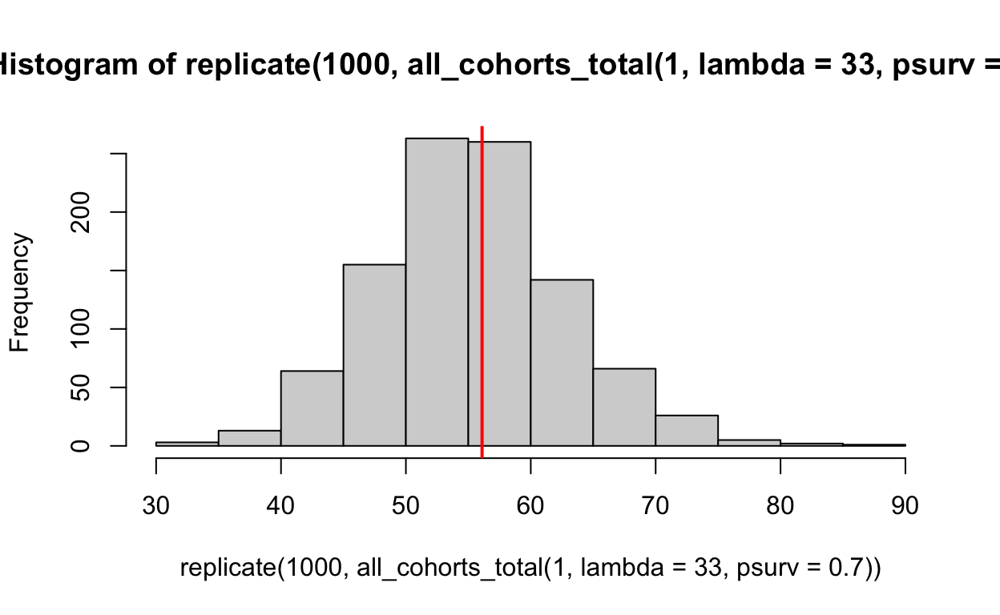
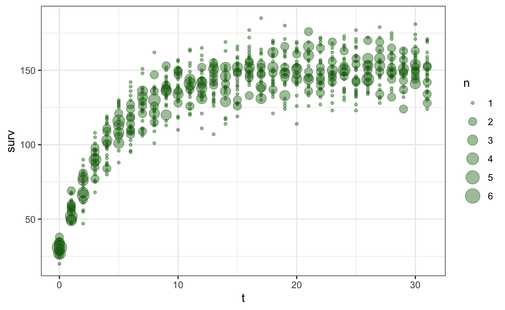

\[ \begin{align} \text{recruits} \sim& \text{Poisson}(\lambda) \\ \lambda =& \beta_0 + \beta_{spp} + \beta_{plot} + \beta_{year} + \ln(\text{Area}) \\ \beta_{spp} \sim& \text{normal}(0, \sigma_{spp})\\ \beta_{plot} \sim& \text{normal}(0, \sigma_{plot})\\ \beta_{year} \sim& \text{normal}(0, \sigma_{year})\\ \sigma_{spp} , \sigma_{plot}, \sigma_{year} \sim& \text{exponential}(1)\\ \beta_0\sim&\text{normal}(3,1)\\ \end{align} \]
Simulations!
a simple stan program
side note – survivorship every year
an average of \(\lambda\) seedlings grow every year and \(p\) survive to the next generation
The number surviving after t years is
\[ \begin{align} p^t \times \lambda \end{align} \]
which is another, smaller poisson distribution.
What happens if you keep adding more individuals? every year you add on average \(\lambda\) new individuals who survive as described above.
so if that happens every year for \(t\) years then you have
\[ \left(\sum_{i = 0}^t p^i\right) \times \lambda \]
So every year we get on average \(\lambda\) new recruits and they have to survive up to the present to get counted.
\[ \begin{align} \text{recruits} &= \left(\sum_{i = 0}^t p^i\right) \times \lambda \\ &= \lambda \frac{1 - p^{t+1}}{1 - p} \\ \end{align} \]
Is that correct? let’s see with a simulation!
library(tidyverse)
# simulate just one cohort
# "years" is delta-t
make_surviving_vec <- function(years, lambda, psurv){
# how many survive each year --
# include the CURRENT year (so for 3 years we have 3 spaces: t0, t1, t2)
surviving <- numeric(years)
starting <- rpois(n = 1, lambda =lambda)
surviving[1] <- starting
if(years > 0 )
for(i in 1:years){
surviving[i+1] <- rbinom(n = 1, prob = psurv, size = surviving[i])
}
return(surviving)
}
make_surviving_vec(5, 20, .92)
[1] 17 15 13 11 10 9make_surviving_vec(2, 10, .3)
[1] 9 1 0# so how many ultimately survive? -- just take the end of the vector
make_surviving_vec(15, 20, .92) |> tail(1)
[1] 5### repeat this for every cohort produced in the t years:
all_cohorts_total <- function(year, ...){
# how many survive to present from each cohort?
each_cohort <- numeric(year+1)
# for each year, simulate one surviving cohort
# assuming that mortality has happend for this year!
for (y in 0:year){
each_cohort[y+1] <- make_surviving_vec(y, ...) |> tail(1)
}
# return(each_year)
total <- sum(each_cohort)
return(total)
}
I want to demonstrate that these functions work as intended! At time \(t=0\), an average of \(\lambda\) trees are born but none have died yet. So the average surviving from a cohort should be \(\lambda\)
Meanwhile if one year passes, the cohort from last year has one chance to die. Now we should have \(\lambda + p\lambda\) trees to look at:
hist(replicate(1000, all_cohorts_total(1, lambda = 33, psurv = .7)))
abline(v = 33*.7 + 33, lwd = 2, col = "red")

Finally, lets simulate many observations made of many plots, with increasingly long intervals between observations:
# now do this for every year, and repeat the process:
p <- .8
lambda <- 30
curve_data <- tibble(t = 0:31) |>
rowwise() |>
mutate(surv = list(replicate(30,
all_cohorts_total(t, lambda = lambda, psurv = p)))) |>
unnest(surv)
curve_data |>
ggplot(aes(x = t, y = surv)) +
geom_count(alpha = .4, col = "darkgreen") +
theme_bw()

Looks encouraging!
This is modelling the number of recruits made each year. Of course the distribution of individuals of EVERY size category is a balance of two processes. however for most large trees we have individual-level differences.
It’s important to know if we are modelling number of new recruits or simply the number of small trees. This is an expression for the former. But if it is the latter, then you would I guess let t go to infinity. In this case the expression goes to:
\[ \text{recruits} = \lambda \times \frac{1}{1-p} \]
the number of seedlings doesn’t start at 0 however, it starts at the number of seedlings which we last observed in this plot! except the first time.
$$ \[\begin{align} N_s &\sim \text{Poisson}(\mu) \\ \mu & = \begin{cases} \lambda \frac{1}{1-p} \text{for } s = 0 \\ N_{s-1}p^{\Delta t} + \lambda \frac{1 - p^{\Delta t+1}}{1 - p} \text{for } s \gt0 \end{cases} \end{align}\] $$
here \(s\) is just an index to count which sampling we are at; \(s = 0\) means the first sampling. For every sampling after the first, \(\Delta t\) is the time between sampling \(s\) and the previous sampling.
simulation of sampling and parameter recovery
can we simulate observations and recover known parameters? How incorrect are we if we use a model other than the data generating process?
pseudocode and steps for this simulation
- define \(N\) years
- use the approach above to simulate one cohort for each year. before a cohort is born, it contributes 0 individuals to the population. after it is born, it contributes \(n\) individuals to the population (which will eventually be 0 after they all die).
- sum across all cohorts to find out how many are alive at a given time
- allow time for it to reach a balance between births and deaths
- simulate sampling – draw some years, but not all.
incidentally, what happens if you go back every year? then the expected number becomes:
\[ \begin{align} N_{t-1}p + \lambda \\ \lambda(p + 1) \end{align} \]
N <- 200
lambda <- 120
psurvival <- .7
make_cohort_matrix <- function(N, lambda_birth, psurvival){
individuals <- matrix(0, nrow = N+1, ncol = N+1)
for(y in N:0){
after_born <- make_surviving_vec(y, lambda = lambda_birth, psurv = psurvival)
z <- rep(0, times = N +1 - length(after_born))
individuals[y + 1, ] <- c(z, after_born)
}
return(individuals)
}
one_plot <- make_cohort_matrix(N, lambda_birth = 42, psurvival = .8)
plot(colSums(one_plot), type = "l")
This simulates yearly changes in a single plot. I can collect this in a vector and make it a dataframe.
# simulate, then drop the first half -- call it a "burn in" or call it regeneration
fake_seedlings <- tibble(abd = colSums(make_cohort_matrix(1000,
lambda_birth = 42,
psurvival = .8)),
year = seq_along(abd)) |>
filter(year > 200/2)
fake_seedlings |>
ggplot(aes(x = year, y = abd)) + geom_line() +
geom_point() +
theme_bw()
Fit correct stan program
Things we need to know for each observation (ie the data we need):
- is this the first observation or not
- what was the abundance at the previous observation
- how much time has elapsed (deltaT)
library(cmdstanr)
poisson_unmarked_survival <- cmdstan_model(here::here("_posts/2022-08-04-intercept-only-poisson-example/poisson_unmarked_survival.stan"), pedantic = TRUE)
recruit_samples <- poisson_unmarked_survival$sample(data = with(fake_seedling_modeldata,
list(n = length(abd),
abd = abd,
last_abd = last_abd,
is_first = is_first,
deltaT = deltaT
)),
parallel_chains = 4)
Running MCMC with 4 parallel chains...
Chain 1 Iteration: 1 / 2000 [ 0%] (Warmup)
Chain 1 Iteration: 100 / 2000 [ 5%] (Warmup)
Chain 2 Iteration: 1 / 2000 [ 0%] (Warmup)
Chain 2 Iteration: 100 / 2000 [ 5%] (Warmup)
Chain 3 Iteration: 1 / 2000 [ 0%] (Warmup)
Chain 3 Iteration: 100 / 2000 [ 5%] (Warmup)
Chain 4 Iteration: 1 / 2000 [ 0%] (Warmup)
Chain 4 Iteration: 100 / 2000 [ 5%] (Warmup)
Chain 1 Iteration: 200 / 2000 [ 10%] (Warmup)
Chain 2 Iteration: 200 / 2000 [ 10%] (Warmup)
Chain 3 Iteration: 200 / 2000 [ 10%] (Warmup)
Chain 4 Iteration: 200 / 2000 [ 10%] (Warmup)
Chain 1 Iteration: 300 / 2000 [ 15%] (Warmup)
Chain 3 Iteration: 300 / 2000 [ 15%] (Warmup)
Chain 2 Iteration: 300 / 2000 [ 15%] (Warmup)
Chain 4 Iteration: 300 / 2000 [ 15%] (Warmup)
Chain 1 Iteration: 400 / 2000 [ 20%] (Warmup)
Chain 3 Iteration: 400 / 2000 [ 20%] (Warmup)
Chain 2 Iteration: 400 / 2000 [ 20%] (Warmup)
Chain 4 Iteration: 400 / 2000 [ 20%] (Warmup)
Chain 1 Iteration: 500 / 2000 [ 25%] (Warmup)
Chain 3 Iteration: 500 / 2000 [ 25%] (Warmup)
Chain 4 Iteration: 500 / 2000 [ 25%] (Warmup)
Chain 1 Iteration: 600 / 2000 [ 30%] (Warmup)
Chain 2 Iteration: 500 / 2000 [ 25%] (Warmup)
Chain 3 Iteration: 600 / 2000 [ 30%] (Warmup)
Chain 4 Iteration: 600 / 2000 [ 30%] (Warmup)
Chain 1 Iteration: 700 / 2000 [ 35%] (Warmup)
Chain 2 Iteration: 600 / 2000 [ 30%] (Warmup)
Chain 3 Iteration: 700 / 2000 [ 35%] (Warmup)
Chain 1 Iteration: 800 / 2000 [ 40%] (Warmup)
Chain 4 Iteration: 700 / 2000 [ 35%] (Warmup)
Chain 2 Iteration: 700 / 2000 [ 35%] (Warmup)
Chain 3 Iteration: 800 / 2000 [ 40%] (Warmup)
Chain 1 Iteration: 900 / 2000 [ 45%] (Warmup)
Chain 4 Iteration: 800 / 2000 [ 40%] (Warmup)
Chain 2 Iteration: 800 / 2000 [ 40%] (Warmup)
Chain 3 Iteration: 900 / 2000 [ 45%] (Warmup)
Chain 1 Iteration: 1000 / 2000 [ 50%] (Warmup)
Chain 1 Iteration: 1001 / 2000 [ 50%] (Sampling)
Chain 4 Iteration: 900 / 2000 [ 45%] (Warmup)
Chain 2 Iteration: 900 / 2000 [ 45%] (Warmup)
Chain 3 Iteration: 1000 / 2000 [ 50%] (Warmup)
Chain 3 Iteration: 1001 / 2000 [ 50%] (Sampling)
Chain 4 Iteration: 1000 / 2000 [ 50%] (Warmup)
Chain 4 Iteration: 1001 / 2000 [ 50%] (Sampling)
Chain 1 Iteration: 1100 / 2000 [ 55%] (Sampling)
Chain 2 Iteration: 1000 / 2000 [ 50%] (Warmup)
Chain 2 Iteration: 1001 / 2000 [ 50%] (Sampling)
Chain 3 Iteration: 1100 / 2000 [ 55%] (Sampling)
Chain 4 Iteration: 1100 / 2000 [ 55%] (Sampling)
Chain 1 Iteration: 1200 / 2000 [ 60%] (Sampling)
Chain 2 Iteration: 1100 / 2000 [ 55%] (Sampling)
Chain 3 Iteration: 1200 / 2000 [ 60%] (Sampling)
Chain 4 Iteration: 1200 / 2000 [ 60%] (Sampling)
Chain 1 Iteration: 1300 / 2000 [ 65%] (Sampling)
Chain 2 Iteration: 1200 / 2000 [ 60%] (Sampling)
Chain 3 Iteration: 1300 / 2000 [ 65%] (Sampling)
Chain 4 Iteration: 1300 / 2000 [ 65%] (Sampling)
Chain 1 Iteration: 1400 / 2000 [ 70%] (Sampling)
Chain 2 Iteration: 1300 / 2000 [ 65%] (Sampling)
Chain 3 Iteration: 1400 / 2000 [ 70%] (Sampling)
Chain 4 Iteration: 1400 / 2000 [ 70%] (Sampling)
Chain 2 Iteration: 1400 / 2000 [ 70%] (Sampling)
Chain 3 Iteration: 1500 / 2000 [ 75%] (Sampling)
Chain 1 Iteration: 1500 / 2000 [ 75%] (Sampling)
Chain 4 Iteration: 1500 / 2000 [ 75%] (Sampling)
Chain 3 Iteration: 1600 / 2000 [ 80%] (Sampling)
Chain 1 Iteration: 1600 / 2000 [ 80%] (Sampling)
Chain 2 Iteration: 1500 / 2000 [ 75%] (Sampling)
Chain 4 Iteration: 1600 / 2000 [ 80%] (Sampling)
Chain 3 Iteration: 1700 / 2000 [ 85%] (Sampling)
Chain 1 Iteration: 1700 / 2000 [ 85%] (Sampling)
Chain 4 Iteration: 1700 / 2000 [ 85%] (Sampling)
Chain 2 Iteration: 1600 / 2000 [ 80%] (Sampling)
Chain 3 Iteration: 1800 / 2000 [ 90%] (Sampling)
Chain 4 Iteration: 1800 / 2000 [ 90%] (Sampling)
Chain 2 Iteration: 1700 / 2000 [ 85%] (Sampling)
Chain 1 Iteration: 1800 / 2000 [ 90%] (Sampling)
Chain 3 Iteration: 1900 / 2000 [ 95%] (Sampling)
Chain 4 Iteration: 1900 / 2000 [ 95%] (Sampling)
Chain 1 Iteration: 1900 / 2000 [ 95%] (Sampling)
Chain 2 Iteration: 1800 / 2000 [ 90%] (Sampling)
Chain 3 Iteration: 2000 / 2000 [100%] (Sampling)
Chain 3 finished in 10.8 seconds.
Chain 2 Iteration: 1900 / 2000 [ 95%] (Sampling)
Chain 4 Iteration: 2000 / 2000 [100%] (Sampling)
Chain 4 finished in 11.0 seconds.
Chain 1 Iteration: 2000 / 2000 [100%] (Sampling)
Chain 1 finished in 11.3 seconds.
Chain 2 Iteration: 2000 / 2000 [100%] (Sampling)
Chain 2 finished in 11.4 seconds.
All 4 chains finished successfully.
Mean chain execution time: 11.1 seconds.
Total execution time: 11.8 seconds.recruit_samples
variable mean median sd mad q5 q95 rhat
lp__ 410762.24 410763.00 1.08 0.00 410760.00 410763.00 1.00
lambda 71.83 71.55 6.05 5.61 61.85 82.35 1.01
p 0.58 0.59 0.03 0.03 0.53 0.63 1.01
ess_bulk ess_tail
695 NA
610 534
608 531Ingrow – starting from 0
Suppose we start from 0! this is the case when measuring ingrow counts – that is, the number of trees which grow into the “adult” size class. In this case, we start every year from 0 because we have completely searched the plot for trees at the last sampling. The next time we sample that plot, we know all the new trees have grown since then.
In other words, instead of focussing on the “equilibrium” as above, we focus on the part where the trees are still growing:
make_ingrow_cohort <- function(years, lambda, psurv){
if(years==0) stop("you can't come back after 0 years!")
# how many survive each year --
# include the CURRENT year
# (so for 3 years we have 3 spaces: t0, t1, t2)
# in R vectors this is position 1, 2, and 3
# make an empty vector
surviving <- numeric(years)
# the first year trees are born
surviving[1] <- rpois(n = 1, lambda =lambda)
# every year after, they die
if(years > 1 )
for(i in 1:(years-1)){
surviving[i+1] <- rbinom(n = 1, prob = psurv, size = surviving[i])
}
return(surviving)
}
# should be 1 number
make_ingrow_cohort(1, 5, .7)
[1] 5# should be 2 numbers
make_ingrow_cohort(2, 5, .7)
[1] 1 0store it in a matrix
[1] 0 0 5make_ingrow_matrix <- function(N, lambda_birth, psurvival){
individuals <- matrix(0, nrow = N, ncol = N)
for(y in N:1){
after_born <- make_ingrow_cohort(y, lambda = lambda_birth, psurv = psurvival)
z <- rep(0, times = N - length(after_born))
individuals[, y] <- rev(c(z, after_born))
}
return(individuals)
}
make_ingrow_matrix(7,9, .3)
[,1] [,2] [,3] [,4] [,5] [,6] [,7]
[1,] 5 1 0 0 0 0 0
[2,] 0 10 1 0 0 0 0
[3,] 0 0 8 3 0 0 0
[4,] 0 0 0 7 2 1 1
[5,] 0 0 0 0 8 1 2
[6,] 0 0 0 0 0 10 4
[7,] 0 0 0 0 0 0 8To get the total at time T we just sum across all columns (ie the sums of the rows)
rowSums(make_ingrow_matrix(7,9, .9))
[1] 47 44 39 31 27 16 9And the first element is the total found after \(t\) years
Now simulate many observations
plot to confirm it is working
tibble(dt = ingrow_time_interval,
ingrow) |>
ggplot(aes(x = dt, y = ingrow)) +
geom_count() +
stat_function(fun = \(x) 5*(1 - .7^x)/(1 - .7), lwd = 2, col = "orange")

now we can try to fit this in Stan and recover the parameters (hopefully!)
poisson_ingrow <- cmdstan_model(here::here(
"_posts/2022-08-04-intercept-only-poisson-example/poisson_ingrow.stan"),
pedantic = TRUE)
recruit_samples <- poisson_ingrow$sample(data =
list(n = length(ingrow_time_interval),
abd = ingrow,
deltaT = ingrow_time_interval),
parallel_chains = 4)
Running MCMC with 4 parallel chains...
Chain 1 Iteration: 1 / 2000 [ 0%] (Warmup)
Chain 1 Iteration: 100 / 2000 [ 5%] (Warmup)
Chain 1 Iteration: 200 / 2000 [ 10%] (Warmup)
Chain 1 Iteration: 300 / 2000 [ 15%] (Warmup)
Chain 1 Iteration: 400 / 2000 [ 20%] (Warmup)
Chain 1 Iteration: 500 / 2000 [ 25%] (Warmup)
Chain 1 Iteration: 600 / 2000 [ 30%] (Warmup)
Chain 1 Iteration: 700 / 2000 [ 35%] (Warmup)
Chain 1 Iteration: 800 / 2000 [ 40%] (Warmup)
Chain 1 Iteration: 900 / 2000 [ 45%] (Warmup)
Chain 1 Iteration: 1000 / 2000 [ 50%] (Warmup)
Chain 1 Iteration: 1001 / 2000 [ 50%] (Sampling)
Chain 2 Iteration: 1 / 2000 [ 0%] (Warmup)
Chain 2 Iteration: 100 / 2000 [ 5%] (Warmup)
Chain 2 Iteration: 200 / 2000 [ 10%] (Warmup)
Chain 2 Iteration: 300 / 2000 [ 15%] (Warmup)
Chain 2 Iteration: 400 / 2000 [ 20%] (Warmup)
Chain 2 Iteration: 500 / 2000 [ 25%] (Warmup)
Chain 2 Iteration: 600 / 2000 [ 30%] (Warmup)
Chain 2 Iteration: 700 / 2000 [ 35%] (Warmup)
Chain 2 Iteration: 800 / 2000 [ 40%] (Warmup)
Chain 2 Iteration: 900 / 2000 [ 45%] (Warmup)
Chain 2 Iteration: 1000 / 2000 [ 50%] (Warmup)
Chain 2 Iteration: 1001 / 2000 [ 50%] (Sampling)
Chain 3 Iteration: 1 / 2000 [ 0%] (Warmup)
Chain 3 Iteration: 100 / 2000 [ 5%] (Warmup)
Chain 3 Iteration: 200 / 2000 [ 10%] (Warmup)
Chain 3 Iteration: 300 / 2000 [ 15%] (Warmup)
Chain 3 Iteration: 400 / 2000 [ 20%] (Warmup)
Chain 3 Iteration: 500 / 2000 [ 25%] (Warmup)
Chain 3 Iteration: 600 / 2000 [ 30%] (Warmup)
Chain 3 Iteration: 700 / 2000 [ 35%] (Warmup)
Chain 3 Iteration: 800 / 2000 [ 40%] (Warmup)
Chain 3 Iteration: 900 / 2000 [ 45%] (Warmup)
Chain 3 Iteration: 1000 / 2000 [ 50%] (Warmup)
Chain 3 Iteration: 1001 / 2000 [ 50%] (Sampling)
Chain 3 Iteration: 1100 / 2000 [ 55%] (Sampling)
Chain 4 Iteration: 1 / 2000 [ 0%] (Warmup)
Chain 4 Iteration: 100 / 2000 [ 5%] (Warmup)
Chain 4 Iteration: 200 / 2000 [ 10%] (Warmup)
Chain 4 Iteration: 300 / 2000 [ 15%] (Warmup)
Chain 4 Iteration: 400 / 2000 [ 20%] (Warmup)
Chain 4 Iteration: 500 / 2000 [ 25%] (Warmup)
Chain 4 Iteration: 600 / 2000 [ 30%] (Warmup)
Chain 4 Iteration: 700 / 2000 [ 35%] (Warmup)
Chain 4 Iteration: 800 / 2000 [ 40%] (Warmup)
Chain 4 Iteration: 900 / 2000 [ 45%] (Warmup)
Chain 4 Iteration: 1000 / 2000 [ 50%] (Warmup)
Chain 4 Iteration: 1001 / 2000 [ 50%] (Sampling)
Chain 4 Iteration: 1100 / 2000 [ 55%] (Sampling)
Chain 1 Iteration: 1100 / 2000 [ 55%] (Sampling)
Chain 1 Iteration: 1200 / 2000 [ 60%] (Sampling)
Chain 1 Iteration: 1300 / 2000 [ 65%] (Sampling)
Chain 1 Iteration: 1400 / 2000 [ 70%] (Sampling)
Chain 1 Iteration: 1500 / 2000 [ 75%] (Sampling)
Chain 1 Iteration: 1600 / 2000 [ 80%] (Sampling)
Chain 2 Iteration: 1100 / 2000 [ 55%] (Sampling)
Chain 2 Iteration: 1200 / 2000 [ 60%] (Sampling)
Chain 2 Iteration: 1300 / 2000 [ 65%] (Sampling)
Chain 2 Iteration: 1400 / 2000 [ 70%] (Sampling)
Chain 2 Iteration: 1500 / 2000 [ 75%] (Sampling)
Chain 3 Iteration: 1200 / 2000 [ 60%] (Sampling)
Chain 3 Iteration: 1300 / 2000 [ 65%] (Sampling)
Chain 3 Iteration: 1400 / 2000 [ 70%] (Sampling)
Chain 4 Iteration: 1200 / 2000 [ 60%] (Sampling)
Chain 4 Iteration: 1300 / 2000 [ 65%] (Sampling)
Chain 4 Iteration: 1400 / 2000 [ 70%] (Sampling)
Chain 4 Iteration: 1500 / 2000 [ 75%] (Sampling)
Chain 1 Iteration: 1700 / 2000 [ 85%] (Sampling)
Chain 1 Iteration: 1800 / 2000 [ 90%] (Sampling)
Chain 1 Iteration: 1900 / 2000 [ 95%] (Sampling)
Chain 2 Iteration: 1600 / 2000 [ 80%] (Sampling)
Chain 2 Iteration: 1700 / 2000 [ 85%] (Sampling)
Chain 2 Iteration: 1800 / 2000 [ 90%] (Sampling)
Chain 2 Iteration: 1900 / 2000 [ 95%] (Sampling)
Chain 3 Iteration: 1500 / 2000 [ 75%] (Sampling)
Chain 3 Iteration: 1600 / 2000 [ 80%] (Sampling)
Chain 3 Iteration: 1700 / 2000 [ 85%] (Sampling)
Chain 3 Iteration: 1800 / 2000 [ 90%] (Sampling)
Chain 3 Iteration: 1900 / 2000 [ 95%] (Sampling)
Chain 4 Iteration: 1600 / 2000 [ 80%] (Sampling)
Chain 4 Iteration: 1700 / 2000 [ 85%] (Sampling)
Chain 4 Iteration: 1800 / 2000 [ 90%] (Sampling)
Chain 1 Iteration: 2000 / 2000 [100%] (Sampling)
Chain 2 Iteration: 2000 / 2000 [100%] (Sampling)
Chain 3 Iteration: 2000 / 2000 [100%] (Sampling)
Chain 4 Iteration: 1900 / 2000 [ 95%] (Sampling)
Chain 4 Iteration: 2000 / 2000 [100%] (Sampling)
Chain 1 finished in 0.7 seconds.
Chain 2 finished in 0.7 seconds.
Chain 3 finished in 0.7 seconds.
Chain 4 finished in 0.6 seconds.
All 4 chains finished successfully.
Mean chain execution time: 0.7 seconds.
Total execution time: 0.8 seconds.recruit_samples
variable mean median sd mad q5 q95 rhat ess_bulk
lp__ 2770.14 2770.43 1.00 0.71 2768.21 2771.08 1.00 1055
m 4.52 4.48 0.39 0.38 3.93 5.19 1.00 949
p 0.77 0.77 0.03 0.03 0.72 0.81 1.00 892
ess_tail
1265
838
806poisson_ingrow
data { int<lower=0> n; array[n] int abd; vector[n] deltaT; } parameters { real<lower=0> m; real<lower=0,upper=1> p; } model { vector[n] lambda;
m ~ lognormal(1.6, .8); p ~ beta(2, 2);
lambda = m*(1 - p^deltaT)/(1 - p);
abd ~ poisson(lambda); }